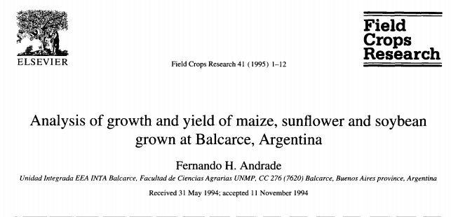

1. Calcule el coeficiente de extinción lumínica para los canopeos a y b en función de los datos proporcionados. | L | A | B |
|---|---|---|
| 1 | 2000 | 2000 |
| 2 | 1000 | 500 |
| 3 | 500 | 125 |
| 4 | 250 | 31 |
Donde:
L: índice de área foliar acumulado (\(m^{2} m^{-2}\))
I: radiación (μmol \(m^{-2} seg^{-1}\)) incidente sobre el tope de cada estrato foliar
Considerando:
\(ln\frac{I}{I_0} = -k * l\)
Para el caso \(A\) tomamos los valores de \(L=1, 2\) y sus respectivos valores de \(I = 2000, 1000\).
(Obviamente se puede tomar cualquier valor de la tabla. Verificar que el resultado siempre es el mismo)
\(ln\frac{1000}{2000} = -k * l\)
Ej de cálculo para A:
k_A1 = -log(1000/2000)
k_A1## [1] 0.6931472k_A2 = -log(250/2000)/(4-1)
k_A2## [1] 0.6931472Ej de cálculo para B:
k_B1 = -log(125/2000)/(3-1)
k_B1## [1] 1.386294Ejemplo de k bajos es el maíz (canopias erectófilas dejan pasar más luz. k= 0.3 aprox), mientras que canopias planófilas, como el girasol, presentan coeficientes más altos (ej. k= 1,5).
2. ¿Qué estrategias utilizarían para maximizar la producción de biomasa
(kg/ha de materia seca) a lo largo de un ciclo agrícola? 3. Expliquen cómo la densidad de plantas y el espaciamiento entre hileras afectan a: i) la intercepción de radiación, ii) el IAF crítico y iii) el tiempo requerido para alcanzar el IAF crítico. 4. Expliquen las diferencias entre maíz, girasol y soja en las curvas de
acumulación de biomasa en función del tiempo. 5. a) Disponemos de una ecuación matemática logística que describe la acumulación de materia seca de un cultivo en función de los días desde la emergencia ¿Cómo podríamos estimar la tasa de crecimiento para un día determinado, y la máxima tasa de crecimiento que alcanza el cultivo?
b) Disponemos de una ecuación matemática que describe la tasa de acumulación de materia seca de un cultivo en función de los días desde la emergencia ¿Cómo podríamos determinar la biomasa que se acumuló entre dos momentos del ciclo? 
Actividad:
La producción de biomasa de soja es marcadamente inferior a la de maíz. De acuerdo a @andrade1995analysis: ¿cuánto de esta menor producción es explicado por radiación interceptada, por eficiencia fotosintética del canopeo y por contenido energético del producto?
duración del ciclo= temperatura y fotoperiodo Elección del genotipo y la fecha de siembra que maximice la duración del ciclo del cultivo aprovechando el periodo libre de heladas. También aprovechar picos de radiación inc. Dobles cultivos. Cultivos de cobertura.
Int. rad IAFc Tiempo a IAFc > Densidad > > < < Espaciamiento entre hileras > < <
Diferencias entre maíz, girasol y soja en cuanto a la acumulación de biomasa en función del tiempo:
Al comienzo de la estación de crecimiento, el girasol y maíz acumulan materia seca más rápidamente que la soja. Girasol: tipo de hojas, canopeo planófilo y altas tasas de crecimiento inicial. Rápidamente cubre el suelo. (Por eso supera un poco al maíz en las etapas iniciales). También acomoda sus hojas al sol. Esto actúa sobre la fracción de rad int. Girasol también tiene alta “ec” es una C3 eficiente, porque tiene una mayor actividad específica de la Rubisco y tiene alta conductancia estomática. En llenado de granos la tasa de acumulación de biomasa de girasol cae, porque: (i) el principal componente de los granos de girasol son lípidos, y los lípidos son muy costosos energéticamente. Cae la “ec”; (ii) El girasol pierde hojas más rápido y cae la fracción de rad int. Maíz tiene una alta “ec”. Aun cuando hacemos la comparación de los tres cultivos en “eq. glucosa” es el más eficiente de los tres cultivos. Esto se debe a su metabolismo C4 (no se detecta foto respiración) y en menor medida a su canopeo erectofilo. Haciendo la comparación en MS, hay que tener en cuenta que el maíz almacena en sus granos principalmente almidón. Mientras que girasol tienen alto contenido de aceite en los granos. Y soja alto contenido de proteínas y aceite en los granos. Es principalmente por esto último (granos compuestos principalmente por almidón) es que el maíz mantiene altas tasas de acumulación de biomasa en llenado de granos (esto actúa sobre la “ec”). También hay que sumarle la mayor persistencia del área foliar en llenado de granos en comparación con los otros cultivos. Esta último actúa sobre “fracción de rad int”. La baja tasa de acumulación de biomasa en la soja es consecuencia principalmente de su baja “ec”. Porque la soja solapa etapas vegetativas con reproductivas, es una especie C3 con pérdidas por fotorrespiración. Por último, sus granos tienen como componentes principales proteínas y lípidos los cuales son más costosos energéticamente. Debajo las figuras que muestran “acumulación de biomasa”, “int rad” y “ec”, comparada de los 3 cultivos.
5- a- f(x) que describe la acumulación de materia seca en el tiempo). En eje y tenés g acumulados de Biomasa por metro cuadrado y en x, días. Para estimar la tasa de crecimiento en un día determinado lo que hay que hacer es obtener la f’(x) (la derivada o derivada primera) en el punto x de interés. Y para conocer la máxima tasa, se debe obtener la segunda derivada de la función (f’’(x)) e igualar f’’(x)=0, en donde una de las soluciones corresponderá al punto de inflexión de f(x) y al máximo de f’(x). Dicho de otra manera, f’(x) corresponde a las tasas instantáneas de acumulación de biomasa (en cada x). Si esa función es derivada nuevamente y se iguala a 0, se obtendrá el valor máximo de tasa de crecimiento alcanzado.
b- ahora tenemos una f(x) que describe la tasa de acumulación de materia seca (y) en función del tiempo en días (x). Para obtener la biomasa acumulada entre dos puntos del ciclo (desde x1 hasta x2) se debe integrar f(x) entre x1 y x2 (área bajo la curva).
Actividad paper Biomasa = rad int x EUR (en energía) x gramos de materia seca/eq Glu (inverso a la calidad de producto)
g/m2 = MJ/m2 x eqGlu/MJ x g/eq Glu (unidades)
M 2250 = 820 x 3.71 x 0.74 S 1200 = 720 x 2.60 x 0.64 Análisis relativo M 1 = 1 x 1 x 1 S 0.53 = 0.88 x 0.7 x 0.86